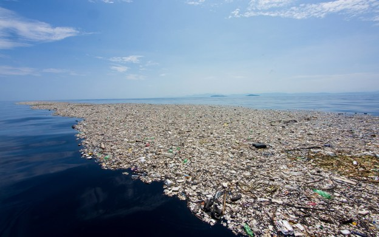
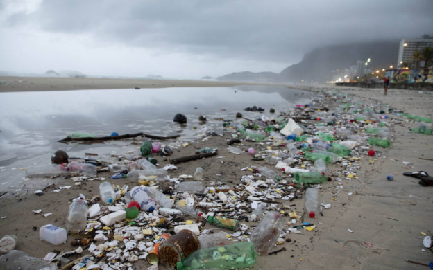
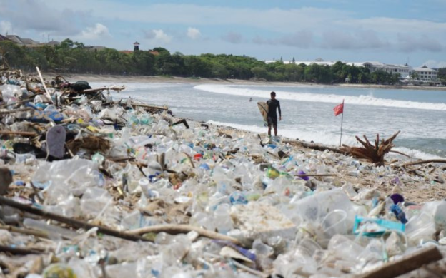
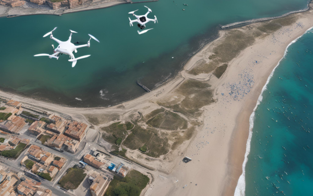
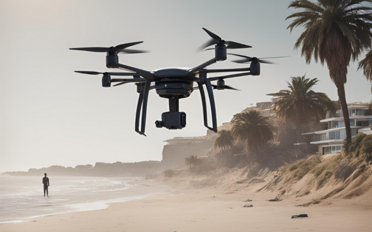
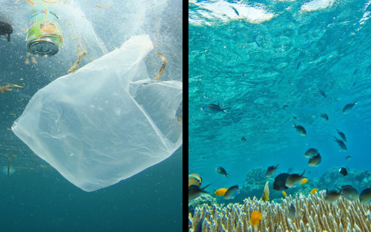
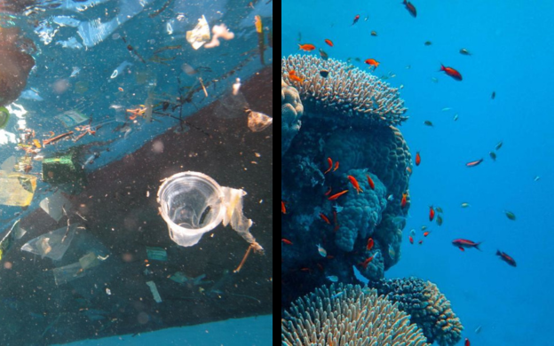
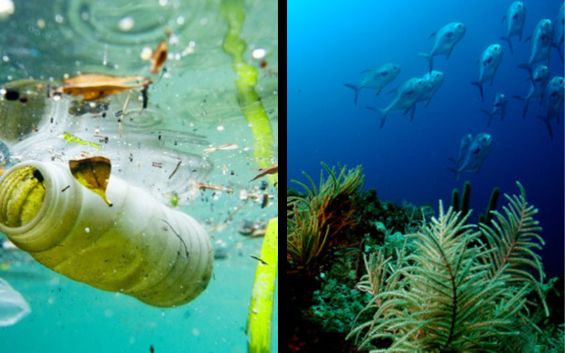
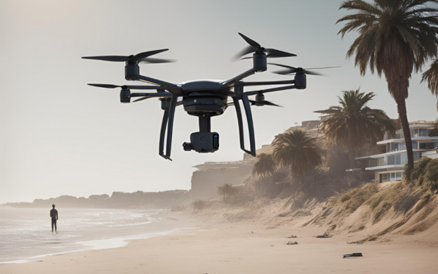
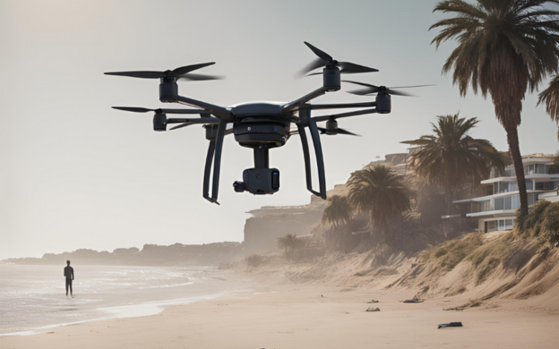

A poluição plástica nas áreas costeiras estão causando sérios danos aos habitats marinhos, afetando a vida marinha, a saúde pública e a economia local. A crescente quantidade de resíduos plásticos resulta em praias sujas e águas contaminadas, afastando turistas e prejudicando a pesca.



Nossa Tecnologia
Utilizamos uma combinação de sensores avançados, drones e robôs autônomos para monitorar e limpar os resíduos plásticos de forma eficiente. Nossos sistemas inteligentes garantem a remoção rápida e eficaz dos resíduos, preservando a biodiversidade marinha e melhorando a qualidade das praias.


Nossos Objetivos
Redução da Poluição: Diminuir significativamente a quantidade de resíduos plásticos nas praias e águas costeiras.
Preservação dos Ecossistemas: Proteger e recuperar os habitats marinhos afetados pela poluição plástica.
Educação Ambiental: Promover a conscientização sobre a importância de reduzir, reutilizar e reciclar plásticos.
Público-alvo
Nossa solução foi desenvolvida para beneficiar:
Comunidades Costeiras: Melhoria na qualidade de vida e oportunidades econômicas.
Autoridades Locais: Ferramentas para gestão eficiente da poluição e preservação ambiental.
ONGs Ambientais: Apoio técnico e parcerias para promover a sustentabilidade.
Indústria do Turismo: Praias limpas e atrativas, aumentando o fluxo de turistas.
Preservação Ambiental: Proteção dos habitats marinhos e aumento da biodiversidade.
Desenvolvimento Econômico: Melhoria no turismo e nas atividades pesqueiras, gerando mais renda para a comunidade.
Qualidade de Vida: Ambientes mais limpos e saudáveis para os moradores e visitantes.



Impacto Diário
Nossa solução impacta positivamente a vida diária dos moradores locais ao proporcionar um ambiente mais limpo e saudável. A remoção contínua dos resíduos plásticos melhora a qualidade das praias e das águas, permitindo que a comunidade e os turistas desfrutem de um ambiente natural preservado.
 (1).png) 
